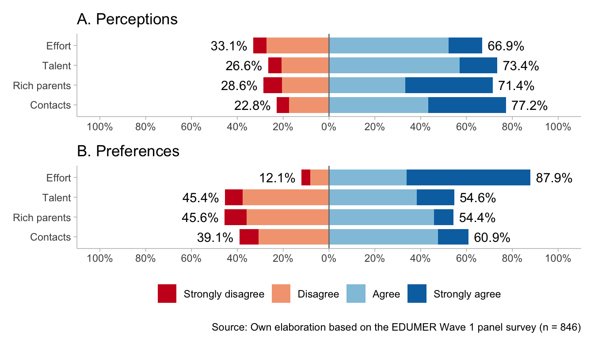
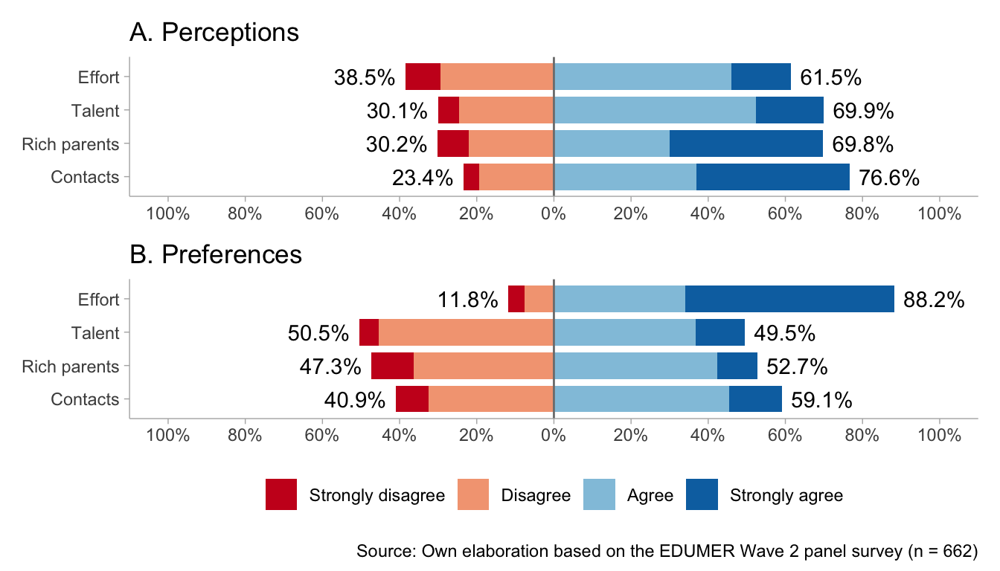

![]()
| Components | Dimensions | Item (English) | Item original (Spanish) |
|---|---|---|---|
| Perception | Meritocratic | In Chile people are rewarded for their efforts | En Chile las personas son recompensadas por sus esfuerzos |
| In Chile people are rewarded for their intelligence and ability | En Chile las personas son recompensadas por su inteligencia y habilidad | ||
| Non meritocratic | In Chile those with wealthy parents do much better in life | En Chile a quienes tienen padres ricos les va mucho mejor en la vida | |
| In Chile those with good contacts do much better in life | En Chile a quienes tienen buenos contactos les va mejor en la vida | ||
| Preference | Meritocratic | Those who work harder should reap greater rewards than those who work less hard | Quienes más se esfuerzan deberían obtener mayores recompensas que quienes se esfuerzan menos |
| Those with more talent should reap greater rewards than those with less talent | Quienes poseen más talento deberían obtener mayores recompensas que quienes poseen menos talento | ||
| Non meritocratic | It is good that those who have rich parents do better in life | Está bien que quienes tengan padres ricos les vaya mejor en la vida | |
| It is good that those who have good contacts do better in life | Está bien que quienes tengan buenos contactos les vaya mejor en la vida |
This document was last modified at 2026-01-05 11:07:37 and it was last rendered at 2026-01-05 11:07:37.
1 Introduction
Despite rising economic inequality and limited social mobility in contemporary societies (Chancel et al., 2025; López-Roldán & Fachelli, 2021), meritocratic beliefs remain remarkably high among citizens (Mijs, 2019; Sandel, 2020). Meritocracy refers to the idea that social rewards are (and should be) allocated based on effort and ability rather than social origins or connections (Young, 1958). Schools, long associated with opportunity and mobility, are a prime site of early socialization of this belief: beyond achievement narrative, grading, tracking, and selection make “merit” visible and consequential (Darnon et al., 2018; Dubet, 2011). However, the promise of education as an equalizer is undermined by persistent inequalities in later outcomes and by evidence that schooling often reproduces inequality through stratified and unequal learning environments (Bourdieu & Passeron, 1990; Goudeau & Croizet, 2017; Zhou, 2019). This tension makes schools critical arenas where meritocratic beliefs are formed and can function as an ideological lens: interpreting outcomes as fair reflections of merit can obscure structural disadvantages and legitimize hierarchies (Batruch et al., 2022; Lampert, 2013; Mijs, 2016b; Tang et al., 2025; Wiederkehr et al., 2015). Understanding how young people perceive and endorse these beliefs is therefore crucial for tracing early links between schooling, fairness, and inequality.
Regardless of its importance, empirical research on meritocratic beliefs remains conceptually and operationally fragmented. Measures range from broad attitudes toward mobility and inequality to implicit beliefs about success, responsibility, and structural constraints (Castillo et al., 2019; Trump, 2020). In recent education research, studies still rely on single-item or single-dimensional indicators and often conflate descriptive perceptions (how meritocracy works) with normative preferences (how it should work) (C. Liu & Wang, 2025; Tang et al., 2025). A related problem concerns the incorporation of non-meritocratic logics. Even when researchers distinguish merit factors from non-merit factors (e.g., family wealth or connections), these dimensions are often collapsed into a single continuum through subtraction or reverse-coding (as did by Reynolds & Xian, 2014). This practice embeds a zero-sum assumption that is theoretically nontrivial and empirically risky: if merit and non-merit beliefs can coexist (“dual consciousness”), increasing recognition of non-merit barriers may mechanically appear to be a decline in meritocracy (Zhu, 2025). In schools—where these beliefs are learned, negotiated, and reinforced—this measurement problem is especially consequential because it can distort how we interpret age differences and change over time (Batruch et al., 2022; Elenbaas, 2019).
To move beyond these limitations, we adopt a multidimensional approach that treats perceptions and preferences, as well as meritocratic and non-meritocratic principles, as distinct dimensions. Castillo et al. (2023) proposed such a conceptual and measurement framework, which has received support in adult populations but has not yet been tested among school-aged students in everyday school contexts. Building on research on the early formation of distributive beliefs and fairness judgments (Batruch et al., 2022; Darnon et al., 2018; Tang et al., 2025; Wiederkehr et al., 2015), this paper extends Castillo et al.’s (2023) framework to early adolescence in Chile. Our research question is: Do school-aged students distinguish between meritocratic and non-meritocratic principles, and between perceptions (“what is”) and preferences (“what should be”)? Additionally, can these dimensions be measured in ways that are comparable across age cohorts and consistent over time? We argue that this conception of meritocracy clarifies what adolescents actually endorse—descriptions, ideals, or both—and provides the basis for measurement required for developmental and longitudinal inference.
Chile offers a particularly informative context for this test. Chile remains among the most unequal countries in Latin America and the OECD (Chancel et al., 2025; Flores et al., 2020), and its school system has been profoundly shaped by neoliberal reforms that organized schooling as a quasi-market (Ferre, 2023; Madariaga, 2020). By institutionalizing school choice and public–private competition—supported by subsidies, performance incentives, and selective admission—these reforms have produced a highly stratified and segregated educational landscape (Corvalán et al., 2017). In such a context, both merit-based and non-merit-based explanations of achievement are likely to be socially salient: daily school experiences emphasize individual performance while social background disparities across schools and trajectories remain visible. Meritocratic narratives also remain influential in how educational communities interpret success, effort, and fairness within schools (Castillo et al., 2024; Moyano Dávila et al., 2025). Chile, therefore, constitutes a critical case to evaluate whether adolescents distinguish perceptions from preferences and meritocratic from non-meritocratic principles, and whether these dimensions are comparable across age cohorts and over time—an essential step for understanding how schooling shapes beliefs about opportunity and inequality.
To address these questions, we use longitudinal survey data from school-aged students in Chile collected in 2023 and 2024. Our measurement strategy combines invariance testing (to assess comparability across age cohorts and waves) with latent correlations (to evaluate convergent validity). The following section develops the theoretical framework by defining meritocratic beliefs, reviewing their measurement, examining the role of schools as socializing agents, and discussing the Chilean case. We then describe the sample, procedures, measures, and analytic approach. The results sections present the measurement tests and substantive associations, and the conclusion discusses the implications for adolescents’ understanding of meritocracy, the stability and comparability of these beliefs, and the scale’s relationship to attitudes toward inequality.
2 Theoretical and empirical background
2.1 Meritocratic perceptions and preferences
Meritocracy refers to a distributive system in which individual merit—typically defined as effort and talent—is treated as the primary criterion for allocating resources and rewards, rather than social origins or inherited privilege (Bell, 1972; Young, 1958). While Young (1958) coined the term as a dystopian critique of a society that justifies power and status through “achievement,” it has since been re-appropriated as a positive ideal of fairness, especially in liberal and market-oriented societies (Dubet, 2011; Mijs, 2019; Van De Werfhorst, 2024). From a sociological standpoint, meritocracy is not only a cognitive judgement about how inequality works; it is also a moral lens through which people interpret differences in income, status, and life chances (Castillo et al., 2019). Precisely because it frames outcomes as earned, meritocratic ideals can end up reinforcing inequality: “winners” are encouraged to see their position as deserved, while “losers” are pushed toward self-blame rather than structural critique (Mijs, 2016a; Sandel, 2020; Wilson, 2003). The key point is that meritocracy often promises to mitigate inherited advantage, but in practice, it can legitimize unequal structures by translating social privilege into individualized narratives of deservingness.
A significant limitation of earlier research is the way in which “meritocratic beliefs” have often been measured. As Castillo et al. (2023) argues, many studies rely on item batteries assessing the importance of effort, talent, family background, networks, or luck for “getting ahead,” and then reduce them to a single score. This becomes especially problematic when researchers construct a difference or continuum measure—treating meritocratic and non-meritocratic explanations as opposite ends of the same scale (e.g., by subtracting “non-merit” from “merit,” as in the Reynolds & Xian (2014) approach). The underlying assumption is that endorsing merit must imply rejecting structural or relational advantages, even though these can clearly coexist in people’s worldviews. Recent work has explicitly raised this issue: C. Liu & Wang (2025) emphasizes that meritocratic endorsement may be stable while recognition of structural constraints changes; Tang et al. (2025) motivates “dual consciousness” but still risks obscuring it when operationalizations force relative trade-offs; and Zhu (2025) argues directly that meritocratic and structural explanations are not zero-sum, but often accumulate rather than replace one another. The measurement implication is essential but straightforward: if people can simultaneously believe that effort matters and that family resources or connections matter, then unidimensional indices (and especially subtraction scores) can manufacture artificial “neutral” positions and blur substantively distinct belief profiles.
Castillo et al. (2023) address these problems by decomposing “meritocratic beliefs” along two analytically distinct dimensions: preferences versus perceptions, and meritocratic versus non-meritocratic allocation principles. Preferences capture normative ideals about how rewards should be distributed (e.g., whether effort and ability ought to determine life chances). In contrast, perceptions capture descriptive evaluations of how society actually works (e.g., whether existing inequalities reflect merit-based processes) (Janmaat, 2013). In parallel, the framework treats meritocratic elements (e.g., effort, talent) and non-meritocratic elements (e.g., social origins, inherited privilege, networks) as conceptually distinct rather than as opposite poles. This yields four related but distinct constructs: meritocratic preferences, meritocratic perceptions, non-meritocratic preferences, and non-meritocratic perceptions. The payoff is both theoretical and empirical: it accommodates configurations that older measures tend to erase—such as strong endorsement of meritocracy as an ideal, combined with explicit recognition that advantages linked to family background and networks shape outcomes. This is precisely the kind of “dual consciousness” that Zhu (2025) theorizes, but stated more explicitly as coexistence across both (a) merit vs. non-merit beliefs and (b) what people think is legitimate vs. what they think is real.
With that clarified, research in adult populations has mapped both the social foundations and the political consequences of meritocratic perceptions. On the “causes” side, higher-status individuals—those with more education, income, and occupational prestige—are consistently more likely to endorse merit-based explanations for social outcomes (Duru-Bellat & Tenret, 2012; García-Sánchez et al., 2018; Mijs, 2019). On the “consequences” side, perceiving one’s society as meritocratic is associated with lower support for redistribution and egalitarian policies (Hoyt et al., 2023; Pañeda-Fernández et al., 2026; Tejero-Peregrina et al., 2025), as well as greater acceptance of inequality and market-based allocation logics (Castillo et al., 2024; Castillo et al., 2019). Experimental evidence is consistent with a causal pathway in which exposure to upward-mobility information or “self-made” narratives reduces redistributive support and increases tolerance of inequality and system-justifying orientations, whereas exposure to low or downward mobility produces the opposite pattern—effects that are often partly mediated by strengthened meritocratic perceptions (Deng & Wang, 2025; Matamoros-Lima et al., 2025). Together, this literature positions meritocratic perceptions as both socially patterned and politically consequential: they shape whether inequality is read as a fair outcome of individual performance or as a problem requiring collective correction.
Finally, meritocracy is deeply entangled with schooling, making education a natural bridge to the next section. Schools are key institutions for staging meritocratic ideals—through evaluation, grading, selection, and credentials that signal that effort and ability should be rewarded—while also being settings where non-meritocratic advantages (family resources, cultural capital, peer environments, and unequal school quality) remain visible and consequential. This duality helps explain why students may endorse meritocracy as an ideal yet recognize structural constraints, a pattern highlighted in education-focused work on “dual consciousness” and shifting awareness of opportunity structures (C. Liu & Wang, 2025; Tang et al., 2025). In this sense, schools are not merely correlated with meritocratic beliefs; they are central sites where such beliefs are formed and negotiated—setting up the discussion of meritocracy in the school context that follows.
2.3 The Chilean Educational Context: Marketization and Segregation
Chile represents a paradigmatic case of neoliberal educational reform in Latin America, characterized by extensive privatization and market-based mechanisms that have profoundly shaped its educational landscape. Following reforms introduced during the civil-military dictatorship (1973–1989) and expanded throughout the democratic period, Chile developed one of the most marketized school systems globally, where access to quality education is heavily stratified by socioeconomic status and payment capacity (Boccardo, 2020; Madariaga, 2020). The Chilean educational system operates through three administrative categories: public schools (30.6% of enrollment), state-subsidized private voucher schools (54.0%), and fully private schools (9.3%), with the latter predominantly serving higher-income families (Castillo et al., 2024). This tripartite structure emerged from the 1980s voucher reform, which introduced market competition by allowing families to choose schools and providing per-student subsidies to both public and private institutions. While intended to improve quality through competition, the system has instead reinforced socioeconomic segregation, as schools select students and families sort themselves based on ability to pay additional fees and navigate the educational marketplace (Torche, 2014).
This institutional design has created a highly stratified educational environment where school socioeconomic composition strongly predicts both academic outcomes and student experiences. The Chilean education system exhibits severe difficulties in closing socioeconomic and cultural gaps of origin, with schools serving as sites of social reproduction rather than mobility (Bourdieu & Passeron, 1990). Despite some upward mobility into intermediate classes being feasible, access to elite educational opportunities—and subsequently elite social strata—remains largely restricted by family background (López-Roldán & Fachelli, 2021; Torche, 2014). Within this context, meritocratic discourse has become particularly salient, with schools promoting values and narratives that emphasize individual effort and talent as the primary determinants of academic success, often obscuring the structural advantages that higher-status students bring to educational settings (Castillo et al., 2024).
Chile’s educational marketization is part of a broader pattern of neoliberal reforms that have commodified essential services across multiple domains. Following the dictatorship-era restructuring, health, pensions, and education have all become areas where provision and access are managed substantially through private entities and segmented by individual payment capacity (Boccardo, 2020; Ffrench-Davis, 2018). Despite steady economic expansion, Chile continues to rank among the most unequal nations in the OECD, with the poorest 50% receiving only 8.2% of total income while the richest 1% receives almost 27% of income and holds 36.6% of wealth (Chancel et al., 2025; Flores et al., 2020). This acute economic inequality coexists with widespread belief in individual responsibility for economic outcomes—a phenomenon documented across Latin America but particularly pronounced in Chile (Bucca, 2016; Mac-Clure et al., 2024).
The tension between high inequality and individualistic explanations of success came to a head in October 2019, when massive social protests erupted across Chile. Initially sparked by high school students protesting transportation fare increases, the mobilizations quickly expanded to broader demands for equality of opportunities, particularly regarding access to quality education, healthcare, and pensions (Somma et al., 2021). These protests revealed deep dissatisfaction with the commodification of social services and challenged dominant meritocratic narratives, though subsequent research suggests that fundamental attitudes toward market-based distribution may have proven resilient even in the face of these collective political events (Castillo et al., 2025).
This highly stratified and marketized educational context provides a particularly relevant setting for examining how students develop attitudes toward economic inequality and market-based distribution. Students in Chile are socialized within institutions that simultaneously promote meritocratic ideals while operating according to market logics that explicitly segment access by payment capacity. Research indicates that Chilean students exhibit substantial support for market justice principles—justifying unequal access to healthcare, education, and pensions based on income—at rates higher than those observed in adult populations (Castillo et al., 2024).
Understanding how the Chilean educational context shapes these attitudes requires attention to both family and school socialization processes, the role of meritocratic perceptions, and the institutional features that normalize market-based inequalities. The meritocratic framing prevalent in Chilean schools treats academic achievement as the outcome of individual effort and talent rather than as the result of differential access to resources and opportunities, potentially legitimizing broader patterns of social and economic inequality (Darnon et al., 2018). This context makes Chile an ideal case for examining the interplay between educational experiences, meritocratic beliefs, and preferences for market justice.
3 This study
4 Method
4.1 Participants and Procedure
This study draws on secondary data from the Panel Survey on Education and Meritocracy (EDUMER) for its 2023 and 2024 waves for school-age students. The primary objective is to examine students’ beliefs, attitudes, and behaviors concerning meritocracy, inequality, and citizenship. Data collection was carried out by a professional research firm using a Computer-Assisted Web Interviewing (CAWI) approach, based on online questionnaires administered to sixth-grade and first-year secondary students from nine schools located in the Metropolitan and Valparaíso regions of Chile. The sampling strategy was non-probabilistic and lacked quota controls; however, a minimum sample size of 900 students was established to ensure adequate statistical power. All participants were provided with an informed consent form that was reviewed and validated by a parent or legal guardian. The final analytical sample comprises 846 students for the first wave (386 girls, 421 boys, 39 identifying as other; M_{age} = 13.4, SD_{age} = 1.6), and the second wave followed 662 of them (303 girls, 338 boys, 21 identifying as other; M_{age} = 14.4, SD_{age} = 1.6).
4.2 Measures
Scale of Perceptions and Preferences on Meritocracy: The variables included in the measurement model for meritocratic and non-meritocratic perceptions and preferences are operationalized according to the items proposed in the original scale. Perception of meritocracy is measured by two items that assess the level of agreement with the idea that effort and ability are rewarded in Chile, while non-meritocratic perception is measured by two items evaluating the agreement that success is linked to connections and family wealth. Preference for meritocracy is measured by two items that evaluate agreement with the idea that those who work harder or are more talented should be more rewarded. Preference for non-meritocratic aspects is measured by two indicators assessing agreement that it is acceptable for individuals with better connections or wealthy parents to achieve greater success (see Table 1). Each item is rated on a four-point Likert scale ranging from “strongly disagree” (1) to “strongly agree” (4).
Cohort level: To differentiate students’ academic levels across waves for conditional and multigroup invariance analyses, we created a variable indicating whether each student belonged to the primary or secondary school cohort at the time of the survey. This classification allows us to account for developmental differences between and within students. The composition of the cohorts is detailed in Table 2.
| Cohort level | N | Mean | SD | Man | Women | Others |
|---|---|---|---|---|---|---|
| Primary | 725 | 12.28 | 0.74 | 356 | 336 | 33 |
| Secondary | 783 | 15.22 | 0.92 | 403 | 353 | 27 |
4.3 Analytical strategy
To evaluate the underlying structure of the scale, we employed Confirmatory Factor Analysis (CFA) based on a measurement model with four latent factors, using Diagonally Weighted Least Squares with robust correction (WLSMV) estimation. This estimator is particularly suitable for ordinal data, such as four-point Likert-type scales, as it avoids the bias associated with treating categorical data as continuous (Kline, 2023).
Model fit was assessed following the guidelines of Brown (2015), using several indices: the Comparative Fit Index (CFI) and the Tucker-Lewis Index (TLI), with acceptable values above 0.95; the Root Mean Square Error of Approximation (RMSEA), with values below 0.06 indicating good fit; and the Chi-square statistic (acceptable fit indicated by p > 0.05 and a Chi-square/df ratio < 3).
A key contribution of this study lies in assessing the metric stability of the measurement model through factorial invariance testing (Davidov et al., 2014). We implemented two complementary strategies: invariance across cohorts (primary vs. secondary school students) and longitudinal invariance using two panel waves. Given the ordinal nature of the items, we estimated measurement invariance using methods appropriate for ordered categorical measures, following Liu et al. (2017) analysis. Setting a hierarchical approach, we tested four nested models: configural (equal factorial structure), metric (equal factor loadings), scalar (equal intercepts and thresholds), and strict invariance (equal residual variances).
In addition to the traditional Chi-square difference test for model comparisons, we used changes in fit indices to assess invariance: a change in CFI (\Delta \geq -0.010) and RMSEA (\Delta \geq 0.0) were adopted as more robust and sample-size-independent criteria, following Chen’s recommendations (2007).
All analyses were performed using the lavaan package in R version 4.2.2. The hypotheses of this research were pre-registered on the Open Science Framework (OSF), hosted by the Center of Open Science.
5 Results
5.1 Descriptive statistics
The distributions of responses for the meritocracy scale are shown in Figure 1, distinguishing between perceptions (Panel A) and preferences (Panel B). In Wave 1, Panel A (perceptions of how meritocracy actually operates in society) reveals a strong concentration of agreement in all items, particularly regarding the influence of contacts (77.2%), talent (73.4%), and having rich parents (71.4%), while effort also receives considerable endorsement (67.1%). Nonetheless, a significant proportion of students expressed disagreement: 33.1% did not perceive effort is rewarded, 28.6% rejected the idea that having rich parents leads to success, and 26.6% disagreed that talent plays a decisive role. These results suggest a dual recognition: students acknowledge the strong presence of non-meritocratic factors (contacts and parental wealth) in shaping success, while within the meritocratic dimensions, talent is perceived as more influential than effort. Notably, effort is the dimension with the lowest perceived reward in society.

In contrast, Panel B (preferences for how meritocracy should operate) displays a reversed pattern. A very large majority (87.9%) endorse effort as the most legitimate basis for reward, far exceeding its perceived importance in practice. Preferences regarding talent are more divided: 54% support rewarding it, while 45% disagree. Attitudes toward non-meritocratic factors are more negative, particularly regarding parental wealth, where responses are split nearly evenly between agreement and disagreement. For contacts, however, a relative majority (60.9%) still expressed that they should be rewarded, compared to 39.1% who disagreed. Overall, these findings highlight a strong normative preference for effort as the central criterion of meritocracy, while talent and parental wealth receive more ambivalent or critical evaluations. The relatively higher acceptance of contacts as a legitimate factor is noteworthy, suggesting that this element may not be viewed as inherently illegitimate in the ideal functioning of society.

The second wave (Figure 2) largely replicates these trends, with some shifts. In perceptions (Panel A), the recognition of effort as a determinant of success decreases slightly (61.5%), while the importance attributed to talent (69.9%), parental wealth (69.8%), and contacts (76.6%) remains consistently high. In preferences (Panel B), endorsement of effort as the central criterion of success remains extremely strong (88.2%), showing stability across waves. By contrast, support for talent declines, with disagreement rising to 50.5%. Attitudes toward parental wealth mirror those in Wave 1, remaining evenly divided, while the acceptance of contacts continues to be higher than rejection (59.1% vs. 39.1%), although still below the overwhelming support for effort.
Taken together, both waves reveal a stable duality. Students acknowledge that actual social outcomes are strongly shaped by non-meritocratic factors such as family wealth and contacts, and, to a lesser degree, by talent. At the same time, they overwhelmingly prefer a meritocratic ideal where effort—more than talent or inherited advantage—should determine success. This persistent gap between perceptions of reality and normative preferences underscores a central paradox: students strongly value meritocracy as a principle, while remaining skeptical about its realization in practice.
5.2 Cohort Invariance Test

Figure 3 presents the standardized factor loadings estimated using the WLSMV estimator for the primary and secondary cohorts. The text highlighted in red corresponds to the primary education model, while the text in black refers to the secondary education model. A primary result is that, within each cohort, the magnitude of the loadings differs across latent factors.
In the primary education model, meritocratic perception indicators show unequal loadings: the perception of effort has a loading of 0.60, while the perception of talent reaches 0.71. This pattern indicates that the latent factor is more strongly associated with perceptions of talent than with those of effort. A more pronounced discrepancy is observed in the meritocratic preferences factor, where the preference for effort shows a relatively low loading (0.46), in contrast to a substantially higher factor loading for the preference for talent (0.86), suggesting that the factor is mainly driven by the latter indicator. In comparison, the indicators of non-meritocratic preferences also vary greatly, with the indicator of preference for contacts exceeding preferences for wealthy families by 0.2. Finally, the non-meritocratic perceptions factor does not show variability since its indicators were subject to an equality constraint in the model specification. This decision was made because without this constraint, the perception of contacts yielded a negative loading.
The secondary education model shows both continuities and contrasts with the primary model. Meritocratic perception indicators follow the same pattern as the previous model, where talent carries more weight than effort. In the case of meritocratic preferences, the pattern observed in the primary education cohort is reversed: the preference for effort has the highest weight (0.76), while the preference for talent has the lowest (0.41). With regard to the factor of non-meritocratic perceptions, both indicators have the same weight due to the aforementioned equality restriction. Finally, the loadings of the non-meritocratic preference indicators are slightly higher overall and more homogeneous, indicating a more balanced contribution of preferences for wealthy families and contacts to the latent construct.
| chisq | df | pvalue | cfi | tli | rmsea | srmr | |
|---|---|---|---|---|---|---|---|
| General | 41.026 | 14 | 0.000 | 0.989 | 0.978 | 0.048 | 0.039 |
| Primary | 36.295 | 14 | 0.001 | 0.975 | 0.951 | 0.063 | 0.049 |
| Secondary | 10.877 | 14 | 0.696 | 1.000 | 1.004 | 0.000 | 0.029 |
Table 3 presents the goodness-of-fit indices for each of the three estimated models. In all three cases, the chi-square statistic is not significant, which is to be expected given its known sensitivity to large sample sizes, such as those used in this study; therefore, the overall goodness-of-fit assessment is based mainly on incremental and parsimony indices.
The first model corresponds to the general model, which simultaneously incorporates primary and secondary school students. This model has adequate fit indices (CFI = 0.989; RMSEA = 0.048; \chi²(14) = 41.026), suggesting that the four-factor latent structure provides an empirically satisfactory representation of the construct in the total sample. Consequently, there is preliminary evidence in favor of the structural validity of the factorial model in the student group. Second model was estimated exclusively with data from primary school students. In this case, the fit indices remain within acceptable ranges, although with a lower performance than the general model (CFI = 0.975; RMSEA = 0.063; \chi²(14) = 36.295), suggesting a moderate fit and a lower adequacy of the factorial model in this specific subgroup. Finally, the model estimated for secondary school students shows virtually perfect fit indices (CFI = 1.00; RMSEA = 0.00; \chi²(14) = 11.779). However, this extreme fit pattern is indicative of a possible overfitting of the model to the data, so the results should be interpreted with caution from a psychometric perspective.
Taken together, these findings suggest that, although the proposed factor structure is adequate at the global level, its performance varies across educational cohorts, reinforcing the need to formally assess measurement invariance before making substantive comparisons between groups.
| Model | χ^2 (df) | CFI | RMSEA (90 CI) | Δ χ^2 (Δ df) | Δ CFI | Δ RMSEA | Decision |
|---|---|---|---|---|---|---|---|
| Configural | 24.95 (26) | 1.000 | 0 (0-0.037) | 0 (0) | 0.000 | 0.000 | Reference |
| Tresholds | 47.88 (34) | 0.995 | 0.031 (0-0.05) | 22.929 (8) *** | -0.005 | 0.031 | Reject |
| Tresholds + Loadings | 59.66 (38) | 0.992 | 0.037 (0.017-0.054) | 11.785 (4) ** | -0.003 | 0.006 | Reject |
The results of the different invariance models are presented in the Table 4. To assess invariance between cohorts, the sequential procedure proposed by (svetina_multiplegroup_2020?) was followed, which involves estimating three hierarchical models: (1) a configural model, (2) a model with threshold restrictions, and (3) a final model that simultaneously imposes equality of thresholds and factor loadings between groups.
First, the configural model was estimated, which assumes an identical factor structure in both cohorts (primary and secondary education), without imposing equality restrictions on the parameters. This model presented excessively high fit indices (CFI = 1.00; RMSEA = 0.00), suggesting overfitting and, therefore, insufficient empirical evidence to support the stability of the factor structure between the compared groups.
In a second stage, the model was estimated with restricted thresholds. According to the sample size sensitivity criteria proposed by Chen (2007), the four-latent-factor model does not achieve equivalence between cohorts (\DeltaCFI = −.014 < −.01; \DeltaRMSEA = .019 > .015). This result indicates that, when imposing equality of thresholds, the meritocracy scale does not show invariance between primary and secondary school students, suggesting systematic differences in the location of response categories between the two groups.
Finally, the third model was evaluated with simultaneous restrictions on thresholds and factor loadings. The changes observed in the fit indices (\DeltaCFI = −.003; \DeltaRMSEA = .006) also do not meet the criteria established for assuming metric and scalar invariance. Consequently, this model must also be considered non-invariant. Overall, the results indicate that the meritocracy scale does not present measurement invariance between the cohorts analyzed, which limits the direct comparability of latent scores between educational levels.
5.3 Longitudinal Invariance
A series of nested confirmatory factor analysis (CFA) models were estimated to assess the longitudinal measurement invariance of the constructs across the two waves of the study. The evaluation began with the configural model, which allows all parameters (loadings, intercepts, and residuals) to vary freely and just compare the same factor structure within individuals in time. This model served as the baseline for subsequent comparisons and demonstrated good fit to the data, with \chi^2(68) = 117.7, a Comparative Fit Index (CFI) of 0.991, and a Root Mean Square Error of Approximation (RMSEA) of 0.035, with a 90% confidence interval ranging from 0.024 to 0.046. These indices suggest that the same factorial structure is replicated across time points, meaning that the general configuration of items and latent variables remains stable.
| Model | χ^2 (df) | CFI | RMSEA (90 CI) | Δ χ^2 (Δ df) | Δ CFI | Δ RMSEA | Decision |
|---|---|---|---|---|---|---|---|
| Configural | 117.7 (68) | 0.991 | 0.035 (0.024-0.046) | 0 (0) | 0 | 0.000 | Reference |
| Weak | 122.51 (72) | 0.990 | 0.034 (0.024-0.045) | 4.809 (4) | 0 | -0.001 | Accept |
| Strong | 128.53 (80) | 0.991 | 0.032 (0.021-0.042) | 6.02 (8) | 0 | -0.002 | Accept |
| Strict | 130.17 (84) | 0.991 | 0.031 (0.02-0.04) | 1.635 (4) | 0 | -0.002 | Accept |
Subsequently, the weak invariance model was tested by constraining the factor loadings to be equal across waves. This model also showed a fit that passes the acceptable standards indicated by the literature: \chi^2(72) = 122.51, CFI = 0.990, RMSEA = 0.034 (90% CI: 0.024–0.045). The comparison with the configural model revealed a negligible and non-significant change in model fit, with \Delta \chi^2(4) = 4.809, \DeltaCFI = 0.000, and \DeltaRMSEA = -0.001. These results support the assumption of weak invariance, indicating that the strength of the relationship between items and latent constructs is consistent over time, i.e., within students.
The strong invariance model introduced additional constraints by setting item intercepts and loadings equal across time points, in addition to the equality of thresholds. Fixing thresholds is relevant to ensure that response categories represent equivalent levels of the latent construct across group or time. Whitout threshold invariance, comparisons of latent means may be biased due to differences in how caregories are interpreted rather than true differences in the construct (Y. Liu et al., 2017). This model yielded a \chi^2(80) = 128.53, CFI = 0.991, and RMSEA = 0.032 (90% CI: 0.021–0.042). The changes in fit statistics relative to the weak model were \Delta \chi^2(8) = 6.02, \DeltaCFI = 0.000, and \DeltaRMSEA = -0.002. These minimal differences suggest that the additional constraints did not significantly impair the model’s fit. Therefore, strong invariance is supported, meaning that individuals with the same latent trait level are expected to have the same observed item scores across waves.
Finally, the strict invariance model imposed equality constraints on residual variances in addition to the loadings and intercepts. This model also showed good fit: \chi^2(84) = 130.17, CFI = 0.991, RMSEA = 0.031 (90% CI: 0.020–0.040). The comparison with the strong model revealed a \Delta \chi^2(4) = 1.635, \DeltaCFI = 0.000, and \DeltaRMSEA = -0.002. These changes are minimal and fall well within recommended thresholds for model comparison, indicating that strict invariance is also supported.
In summary, the results support full longitudinal measurement invariance—configural, weak, strong, and strict—suggesting that the constructs are measured equivalently across time. This justifies meaningful comparisons of latent means, variances, and covariances over time, and provides strong evidence of the temporal stability and psychometric robustness of the measurement model. However, it remains important to explore possible sources of misfit or localized non-invariance that could inform refinements to further improve the model.
In parallel, to detect potential sources of local misfit and evaluate the robustness of longitudinal measurement invariance, an univariate score tests was estimated at each level of the invariance hierarchy: configural, metric (weak), scalar (strong), and strict. Using the lavTestScore() function in lavaan, we tested whether specific equality constraints—such as equal loadings, thresholds, or residual variances across time—introduced statistically significant misfit. This method enables the identification of individual parameters that may violate invariance assumptions, even when global model fit remains acceptable.
Across all three constrained models (metric, scalar, and strict), the score tests revealed no significant violations. At the metric level, all loading constraints were supported. In the scalar model, both loadings and thresholds showed stability over time, with no indication of misfit. Finally, under strict invariance, residual variances and thresholds were also found to be invariant across waves. The largest test statistic (\chi^2 = 3.829, p = .050) was observed for a threshold in preference for talent indicator, yet this did not reach significance.
These results provide strong evidence that full longitudinal measurement invariance holds in the data. The measurement model is stable over time in terms, supporting meaningful comparison of latent variable means, variances, and structural relations across time. Full results of the score tests, including all tested constraints and their associated statistics, are presented in the supplementary materials.
5.4 Conditional Longitudinal Invariance
Although no evidence was found in favor of measurement invariance between cohorts, the analysis nevertheless explored the potential heterogeneity associated with cohort differences, given the plausible expectation of their impact on socialization processes. To evaluate the robustness of longitudinal measurement invariance over time while accounting for these effects, a series of nested models were estimated, both with and without controlling for cohort through a dummy variable predicting each latent factor.
All models presented fit indices that exceed commonly accepted standards in the literature, with CFI values above .990 and RMSEA values below .035. The configural model (\chi^2 = 117.70, df = 68, CFI = .991, RMSEA = .035 [.024–.046]) served as the baseline, and subsequent models imposing equality constraints on factor loadings (weak invariance), intercepts (strong invariance), and residual variances (strict invariance) showed negligible changes in fit indices (e.g., \DeltaCFI ≤ .001 across all steps). This pattern held even after including cohort as a covariate: for instance, the strict invariance model with cohort control yielded \chi^2 = 134.21 (df = 92), CFI = .991, and RMSEA = .028 [.017–.038], closely resembling the model without cohort control (\chi^2 = 130.17, df = 84, CFI = .991, RMSEA = .031 [.020–.040]). These results support the conclusion that full longitudinal measurement invariance is maintained, regardless of cohort-related heterogeneity.
| Model | χ^2 (df) | CFI | RMSEA (90 CI) | Δ χ^2 (Δ df) | Δ CFI | Δ RMSEA | Decision |
|---|---|---|---|---|---|---|---|
| Configural | 122.27 (76) | 0.990 | 0.032 (0.021-0.042) | 0 (0) | 0.000 | 0.000 | Reference |
| Weak | 126.95 (80) | 0.990 | 0.032 (0.021-0.042) | 4.684 (4) | 0.000 | -0.001 | Accept |
| Strong | 128.55 (88) | 0.991 | 0.028 (0.017-0.038) | 1.598 (8) | 0.001 | -0.004 | Accept |
| Strict | 131.64 (92) | 0.991 | 0.027 (0.016-0.037) | 3.086 (4) | 0.000 | -0.001 | Accept |
Substantively, these results suggest that the factor structure and measurement properties of the constructs are stable over time and are not significantly influenced by cohort membership. The consistency of the fit indices before and after controlling for cohort indicates that observed longitudinal invariance is not an artifact of generational differences. This strengthens the validity of our interpretations regarding temporal stability and change in the latent constructs under study.
5.5 Validity evidence: Latent correlations between meritocratic beliefs and market justice preferences
Market justice preferences were modeled as a single latent factor in each wave, indicated by three ordinal items capturing attitudes toward education, healthcare, and pensions. The one-factor structure showed satisfactory fit, and longitudinal measurement invariance was supported across waves (configural, metric, threshold, and strict). Full invariance results are reported in the Supplementary Material.
To provide construct-validity evidence, we estimated a joint CFA model combining the longitudinally invariant meritocracy factors with the longitudinally invariant market-justice-preferences factor. Given the ordinal nature of the indicators, models were estimated using WLSMV with theta parameterization. As reported in Table 7, the model with freely estimated correlations across waves showed good fit (\chi^2(170)=534.699, CFI = 0.940, TLI = 0.918, RMSEA = 0.061). Imposing equality constraints on the corresponding correlations across waves yielded a slightly better-fitting model (\chi^2(174)=509.218, CFI = 0.945, TLI = 0.927, RMSEA = 0.058).
| Model | χ² | df | p value | CFI | TLI | RMSEA |
|---|---|---|---|---|---|---|
| Free correlations (by wave) | 534.699 | 170 | <.001 | 0.940 | 0.918 | 0.061 |
| Equal correlations (stable across waves) | 509.218 | 174 | <.001 | 0.945 | 0.927 | 0.058 |
| N = 583 |
The superior fit of the equal-correlations model indicates that the associations between market justice preferences and meritocracy dimensions remained stable across waves, supporting the temporal consistency of these relationships. We next examined the within-wave latent correlations to assess construct validity (see Table 8). The pattern of associations revealed theoretically meaningful distinctions. Market justice preferences showed modest positive correlations with preferred meritocracy in both waves (Wave 1: r = 0.185, p < .05; Wave 2: r = 0.192, p < .05), suggesting that support for market-based allocation aligns with, but is not reducible to, meritocratic ideals.
More strikingly, market justice preferences exhibited substantially stronger associations with preferred non-meritocratic principles—specifically, endorsement of personal contacts or wealthy family background as legitimate bases for reward—with correlations more than twice as large as those for meritocratic preferences (Wave 1: r = 0.441, p < .05; Wave 2: r = 0.468, p < .05).
This asymmetric pattern provides both convergent and discriminant validity evidence: while market justice preferences relate positively to meritocratic principles, they are more strongly characterized by acceptance of market-generated inequalities that extend beyond merit, encompassing advantages derived from social networks and inherited wealth. These findings situate market justice preferences within a broader ideological framework that legitimates market-based differentiation through multiple distributive principles, not solely meritocratic ones.
| Construct | MJP (Wave 1) | MJP (Wave 2) |
|---|---|---|
| Meritocratic perception | 0.233* | 0.126 |
| Non-meritocratic perception | 0.006 | -0.112* |
| Meritocratic preferences | 0.185* | 0.192* |
| Non-meritocratic preferences | 0.441* | 0.468* |
| N = 583 | ||
| *p < .05. |
To evaluate the temporal stability of these associations, we compared the model with freely estimated correlations across waves to a model constraining corresponding within-wave correlations to equality. The constrained model demonstrated superior fit (as shown in Table 7), indicating that the equality constraints were supported overall. However, inspection of the point estimates reveals some noteworthy patterns.
The associations with meritocratic and non-meritocratic preferences remained highly consistent across waves (meritocratic: r = 0.185 to 0.192; non-meritocratic: r = 0.441 to 0.468), reinforcing their robustness. In contrast, correlations with the perception dimensions showed more descriptive variability: the association with meritocratic perceptions weakened from Wave 1 (r = 0.233, p < .05) to Wave 2 (r = 0.126, ns), while the correlation with non-meritocratic perceptions shifted from near-zero (r = 0.006) to negative (r = -0.112, p < .05).
Despite this variation, the restricted model fit suggests that these differences do not represent a substantially significant change, but rather reflect variability around stable parameters. Overall, the evidence supports the temporal stability of the structural relationships between market justice preferences and dimensions of meritocratic beliefs, particularly with regard to theoretically central preference constructs. Taken together, these validity findings illustrate the fundamental purpose of the meritocracy scale: to provide a multidimensional assessment that distinguishes between what individuals perceive as actual operating principles in society (perceptions) and what they believe should guide distribution (preferences), while differentiating between meritocratic and non-meritocratic criteria within each domain. The differential patterns of association with market justice preferences—in particular, the stronger links with non-meritocratic dimensions—demonstrate that the scale captures theoretically meaningful variation that would be obscured by unidimensional measures.
6 Discussion
The present study aimed to evaluate the applicability of the multidimensional model of meritocratic beliefs (Castillo et al., 2023) among school-aged populations in Chile, distinguishing between perceptions and preferences, and assessing measurement invariance across age cohorts and over time. The findings contribute to ongoing debates on the formation, measurement, and reproduction of meritocratic beliefs in educational contexts.
First, the results provide empirical support for the four-factor structure distinguishing perceptions and preferences of meritocracy and non-meritocracy among adolescents. The overall fit indices were consistently strong in both primary and secondary school cohorts, suggesting that the multidimensional framework maintains conceptual validity beyond adult populations. This constitutes a significant extension of previous studies, as it demonstrates that even at early stages of adolescence, students are able to differentiate between how they believe society distributes rewards (perceptions) and how they think it ought to (preferences). In line with Batruch et al. (Batruch et al., 2022) and Elenbaas (Elenbaas, 2019), these findings reinforce the idea that adolescence represents a formative period during which distributive beliefs begin to crystallize around both normative ideals and lived experiences of inequality.
Second, the results point to meaningful differences between cohorts. While configural invariance was supported, further restrictions on thresholds and factor loadings indicated that scalar and strong invariance could not be established. This suggests that the interpretation of meritocratic and non-meritocratic items is not fully equivalent between primary and secondary students. In practical terms, this implies that the salience and meaning of effort, talent, wealth, and social connections shift as students progress through school. These findings resonate with previous evidence showing that schooling itself reconfigures how children understand the relationship between achievement and fairness (Dubet, 2011; Goudeau & Croizet, 2017). Rather than viewing the lack of invariance as a measurement failure, it may be interpreted as evidence of the dynamic and socially embedded nature of meritocratic beliefs—beliefs that evolve as students become increasingly exposed to evaluative practices and stratified educational trajectories.
Third, the item-level results add nuance to this interpretation. In the primary cohort, meritocratic preferences appeared more strongly tied to talent than to effort, whereas in the secondary cohort this pattern was reversed. This inversion suggests that students’ understandings of “deservingness” are not static but reweighted through schooling experiences: younger students may valorize innate ability, while older students—more embedded in competitive grading systems—place greater importance on sustained effort. These findings underscore the value of examining meritocracy not as a monolithic construct but as one continuously reinterpreted through institutional practices, family socialization, and broader cultural narratives (Henry & Saul, 2006; Resh & Sabbagh, 2014).
From a theoretical perspective, the study highlights the usefulness of distinguishing between perceptions and preferences. Consistent with the literature Mijs (2019); Sandel (2020)], the results reveal a gap between the normative endorsement of meritocracy and more skeptical evaluations of its realization in practice. This gap is particularly salient in the Chilean case, where a market-driven and stratified school system simultaneously fosters belief in meritocratic ideals while exposing students to daily reminders of structural inequality (Bellei, 2013; Valenzuela et al., 2013). By documenting how adolescents navigate this tension, the study contributes to a broader understanding of how system-justifying ideologies are formed and sustained.
Several limitations must also be acknowledged. The sampling strategy was non-probabilistic and geographically restricted, which limits the generalizability of the findings. Moreover, the use of short scales, while advantageous for research with adolescents, may constrain the depth of construct measurement. Future research should replicate these analyses using nationally representative samples and incorporate alternative strategies—such as experimental vignettes or implicit measures—that can capture the complexity of distributive beliefs. Longitudinal designs with additional measurement waves would also help clarify whether the observed differences between cohorts reflect developmental stages, institutional trajectories, or broader cohort effects.
In sum, this study advances the literature on meritocratic beliefs by extending a multidimensional measurement model to adolescent populations, providing evidence of both conceptual validity and developmental variation. The findings suggest that schools play a dual role in the socialization of meritocratic beliefs: they transmit ideals of fairness grounded in effort and talent, while simultaneously exposing students to inequalities that challenge these ideals. This tension may represent a key mechanism through which meritocratic beliefs are reshaped across the life course and translated into broader attitudes toward inequality and redistribution. By situating the analysis in Chile—a paradigmatic case of neoliberal educational reform—the study underscores the importance of considering institutional contexts when examining the early socialization of distributive justice beliefs.
7 Conclusion
This study validates the multidimensional model of meritocratic beliefs among school-age youth in Chile, demonstrating that adolescents can clearly distinguish between how rewards are actually distributed (perceptions) and how they should be distributed (preferences). Evidence provided by the longitudinal invariance test suggests that these constructs are psychometrically robust and stable in individuals over time. This confirms that, even in early adolescence, students have a crystallized understanding of distributive justice that can be used to track the long-term impact of educational socialization.
A key finding is the “meritocratic paradox”: students recognize the significant influence of structural advantages, such as family wealth and social connections, but continue to defend effort as the main normative ideal. In the Chilean school system, characterized by commodification and segregation, this disconnect suggests that meritocratic narratives may function as an ideology that justifies the system. By maintaining belief in the ideal of merit despite recognizing a non-meritocratic reality, students may inadvertently legitimize structural inequalities, internalizing academic outcomes as personal failures rather than systemic results.
The lack of invariance across groups reveals a significant change in development, as the balance between talent and effort is reconfigured during the transition to secondary education. This suggests that schools are active agents of socialization that reshape the “moral economy” of success in response to increased institutional competition. Ultimately, these results underscore how educational experience provides the ideological framework that underpins broader patterns of disparity. As Chile grapples with demands for structural reform, understanding how these early beliefs are formed remains crucial to addressing the cultural reproduction of inequality.
For future studies, it is relevant to apply this measurement model in new cases and diverse institutional settings to test its generalization beyond the current sample. Researchers should explore how these meritocratic dimensions relate to market justice preferences—such as attitudes toward the privatization of healthcare and pensions—to determine whether school socialization directly predicts broader political orientations. Furthermore, the incorporation of experimental vignettes or qualitative interviews could clarify why students continue to endorse the ideal of “effort” despite recognizing that “connections” are an important factor for success. Finally, future longitudinal designs should extend beyond two waves to capture the impact of high-risk transitions, such as access to higher education, on the stability of these distributional beliefs.
8 References
Batruch, A., Jetten, J., Van de Werfhorst, H., Darnon, C., & Butera, F. (2022). Belief in School Meritocracy and the Legitimization of Social and Income Inequality. Social Psychological and Personality Science, 194855062211110. https://doi.org/10.1177/19485506221111017
Bell, D. (1972). On equality: I. Meritocracy and equality. The Public Interest, 29, 29–68.
Bellei, C. (2013). El estudio de la segregación socioeconómica y académica de la educación chilena. Estudios Pedagógicos (Valdivia), 39(1), 325–345. https://doi.org/10.4067/S0718-07052013000100019
Bernstein, B. (2005). Theoretical Studies Towards a Sociology of Language.
Boccardo, G. (2020). 30 años de privatizaciones en Chile: Lo que la pandemia reveló (Nodo XXI). Santiago.
Bourdieu, P. (2007). El sentido práctico. Buenos Aires: Siglo Veintiuno Argentina.
Bourdieu, P., & Passeron, J. C. (1990). Reproduction in Education, Society and Culture (Second Edition). Sage Publications Ltd.
Brown, T. A. (2015). Confirmatory factor analysis for applied research (Second edition). New York London: The Guilford Press.
Bucca, M. (2016). Merit and blame in unequal societies: Explaining Latin Americans’ beliefs about wealth and poverty. Research in Social Stratification and Mobility, 44, 98–112. https://doi.org/10.1016/j.rssm.2016.02.005
Castillo, J. C., Iturra, J., Maldonado, L., Atria, J., & Meneses, F. (2023). A Multidimensional Approach for Measuring Meritocratic Beliefs: Advantages, Limitations and Alternatives to the ISSP Social Inequality Survey. International Journal of Sociology, 53(6), 448–472. https://doi.org/10.1080/00207659.2023.2274712
Castillo, J. C., Laffert, A., Carrasco, K., & Iturra-Sanhueza, J. (2025). Perceptions of inequality and meritocracy: Their interplay in shaping preferences for market justice in Chile (2016–2023). Frontiers in Sociology, 10, 1634219. https://doi.org/10.3389/fsoc.2025.1634219
Castillo, J. C., Torres, A., Atria, J., & Maldonado, L. (2019). Meritocracia y desigualdad económica: Percepciones, preferencias e implicancias. Revista Internacional de Sociología, 77(1), 117. https://doi.org/10.3989/ris.2019.77.1.17.114
Chancel, L., Gómez-Carrera, R., Moshrif, R., & Piketty, T. (2025). World Inequality Report 2026. World Inequality Lab, wir2026.wid.world.
Chen, F. F. (2007). Sensitivity of Goodness of Fit Indexes to Lack of Measurement Invariance. Structural Equation Modeling: A Multidisciplinary Journal, 14(3), 464–504. https://doi.org/10.1080/10705510701301834
Corvalán, J., Carrasco, A., & García-Huidobro;J. E. (2017). Mercado escolar: Libertad, diversidad y desigualdad. Ediciones UC.
Darnon, C., Wiederkehr, V., Dompnier, B., & Martinot, D. (2018). “Where there is a will, there is a way”: Belief in school meritocracy and the social-class achievement gap. British Journal of Social Psychology, 57(1), 250–262. https://doi.org/10.1111/bjso.12214
Davidov, E., Meuleman, B., Cieciuch, J., Schmidt, P., & Billiet, J. (2014). Measurement Equivalence in Cross-National Research. Annual Review of Sociology, 40(Volume 40, 2014), 55–75. https://doi.org/10.1146/annurev-soc-071913-043137
Deng, Y., & Wang, F. (2025). It’s my fault, I should try harder! The narratives of self-made upward mobility sustain belief in meritocracy in low social mobility context. British Journal of Psychology, bjop.70015. https://doi.org/10.1111/bjop.70015
Dubet, F. (2011). Repensar la justicia social (Sexta Edición). Siglo XXI.
Duru-Bellat, M., & Tenret, E. (2012). Who’s for Meritocracy? Individual and Contextual Variations in the Faith. Comparative Education Review, 56(2), 223–247. https://doi.org/10.1086/661290
Elenbaas, L. (2019). Against unfairness: Young children’s judgments about merit, equity, and equality. Journal of Experimental Child Psychology, 186, 73–82. https://doi.org/10.1016/j.jecp.2019.05.009
Ferre, J. C. (2023). Welfare regimes in twenty-first-century Latin America. Journal of International and Comparative Social Policy, 39(2), 101–127. https://doi.org/10.1017/ics.2023.16
Ffrench-Davis, R. (2018). Reformas económicas en Chile 1973-2017. TAURUS.
Flores, I., Sanhueza, C., Atria, J., & Mayer, R. (2020). Top Incomes in Chile: A Historical Perspective on Income Inequality, 1964–2017. Review of Income and Wealth, 66(4), 850–874. https://doi.org/10.1111/roiw.12441
García-Sánchez, E., Willis, G. B., Rodríguez-Bailón, R., Palacio Sañudo, J., David Polo, J., & Rentería Pérez, E. (2018). Perceptions of Economic Inequality and Support for Redistribution: The role of Existential and Utopian Standards. Social Justice Research, 31(4), 335–354. https://doi.org/10.1007/s11211-018-0317-6
Henry, P. J., & Saul, A. (2006). The Development of System Justification in the Developing World. Social Justice Research, 19(3), 365–378. https://doi.org/10.1007/s11211-006-0012-x
Hoyt, C. L., Burnette, J. L., Billingsley, J., Becker, W., & Babij, A. D. (2023). Mindsets of poverty: Implications for redistributive policy support. Analyses of Social Issues and Public Policy, 23(3), 668–693. https://doi.org/10.1111/asap.12367
Janmaat, J. G. (2013). Subjective Inequality: A Review of International Comparative Studies on People’s Views about Inequality. European Journal of Sociology, 54(3), 357–389. https://doi.org/10.1017/S0003975613000209
Kline, R. B. (2023). Principles and Practice of Structural Equation Modeling. Guilford Publications.
Lampert, K. (2013). Meritocratic Education and Social Worthlessness. London: Palgrave Macmillan UK. https://doi.org/10.1057/9781137324894
Liu, C., & Wang, J. (2025). Does Education Legitimise Inequality? Comparative Analysis of Income Inequality, Education, and Meritocratic Beliefs. The British Journal of Sociology, 1468–4446.70029. https://doi.org/10.1111/1468-4446.70029
Liu, Y., Millsap, R. E., West, S. G., Tein, J.-Y., Tanaka, R., & Grimm, K. J. (2017). Testing measurement invariance in longitudinal data with ordered-categorical measures. Psychological Methods, 22(3), 486–506. https://doi.org/10.1037/met0000075
López-Roldán, P., & Fachelli, S. (Eds.). (2021). Towards a Comparative Analysis of Social Inequalities between Europe and Latin America. Cham: Springer International Publishing. https://doi.org/10.1007/978-3-030-48442-2
Mac-Clure, O., Barozet, E., & Franetovic, G. (2024). Justicia distributiva y posición social subjetiva: la meritocracia justifica la desigualdad de ingresos? Convergencia Revista de Ciencias Sociales, 31, 1. https://doi.org/10.29101/crcs.v31i0.22258
Madariaga, A. (2020). The three pillars of neoliberalism: Chile’s economic policy trajectory in comparative perspective. Contemporary Politics, 26(3), 308–329. https://doi.org/10.1080/13569775.2020.1735021
Mijs, J. (2016a). Stratified Failure: Educational Stratification and Students’ Attributions of Their Mathematics Performance in 24 Countries. Sociology of Education, 89(2), 137–153. https://doi.org/10.1177/0038040716636434
Mijs, J. (2016b). The Unfulfillable Promise of Meritocracy: Three Lessons and Their Implications for Justice in Education. Social Justice Research, 29(1), 14–34. https://doi.org/10.1007/s11211-014-0228-0
Mijs, J. (2019). The paradox of inequality: Income inequality and belief in meritocracy go hand in hand. Socio-Economic Review, 19(1), 7–35. https://doi.org/10.1093/ser/mwy051
Moyano Dávila, C., Alarcón-Arcos, S., Angelcos, N., Castillo, J. C., & Salgado, M. (2025). Merit as an Attitude: Chilean School Communities’ Repertoires in Chile and the Perception of the “Good Student” in a Post-pandemic Scenario. Social Justice Research, 38(3), 264–289. https://doi.org/10.1007/s11211-025-00456-2
Pañeda-Fernández, I., Kamphorst, J., Van De Rijt, A., & Battu, B. (2026). The relevance of meritocratic beliefs for redistributive preferences increases with income. Social Science Research, 134, 103294. https://doi.org/10.1016/j.ssresearch.2025.103294
Resh, N., & Sabbagh, C. (2014). Sense of justice in school and civic attitudes. Social Psychology of Education, 17(1), 51–72. https://doi.org/10.1007/s11218-013-9240-8
Reynolds, J., & Xian, H. (2014). Perceptions of meritocracy in the land of opportunity. Research in Social Stratification and Mobility, 36, 121–137. https://doi.org/10.1016/j.rssm.2014.03.001
Sandel, M. J. (2020). The tyranny of merit: What’s become of the common good? (First edition). New York: Farrar, Straus and Giroux.
Santander Ramírez, E., Berríos, L., Soto de la Cruz, P., & Avendaño Cassasa, M. (2020). Preferencias parentales de socialización valórica en el Chile contemporáneo, cómo influyen la clase social y la religión de los padres en la manera en que quieren criar a sus hijos? Apuntes: Revista de Ciencias Sociales, 47(87), 65–86. https://doi.org/10.21678/apuntes.87.1027
Somma, N. M., Bargsted, M., Disi Pavlic, R., & Medel, R. M. (2021). No water in the oasis: The Chilean Spring of 2019–2020. Social Movement Studies, 20(4), 495–502. https://doi.org/10.1080/14742837.2020.1727737
Tang, M., Li, A., & Wu, X. (2025). Meritocratic Myth in Mind? Socioeconomic Backgrounds and Shifting Beliefs about Meritocracy among College Students in China. Sociology of Education, 00380407251360432. https://doi.org/10.1177/00380407251360432
Tejero-Peregrina, L., Willis, G., Sánchez-Rodríguez, Á., & Rodríguez-Bailón, R. (2025). From Perceived Economic Inequality to Support for Redistribution: The Role of Meritocracy Perception. International Review of Social Psychology, 38(1), 4. https://doi.org/10.5334/irsp.1013
Torche, F. (2014). Intergenerational Mobility and Inequality: The Latin American Case. Annual Review of Sociology, 40(1), 619–642. https://doi.org/10.1146/annurev-soc-071811-145521
Trump, K.-S. (2020). When and why is economic inequality seen as fair. Current Opinion in Behavioral Sciences, 34, 46–51. https://doi.org/10.1016/j.cobeha.2019.12.001
Valenzuela, J. P., Bellei, C., & Ríos, D. D. L. (2013). Socioeconomic school segregation in a market-oriented educational system. The case of Chile. Journal of Education Policy, 29(2), 217–241. https://doi.org/10.1080/02680939.2013.806995
Van De Werfhorst, H. G. (2024). Is Meritocracy Not So Bad After All? Educational Expansion and Intergenerational Mobility in 40 Countries. American Sociological Review, 89(6), 1181–1213. https://doi.org/10.1177/00031224241292352
Wiederkehr, V., Bonnot, V., Krauth-Gruber, S., & Darnon, C. (2015). Belief in school meritocracy as a system-justifying tool for low status students. Frontiers in Psychology, 6.
Wilson, C. (2003). The Role of a Merit Principle in Distributive Justice. The Journal of Ethics, 7(3), 277–314. https://doi.org/10.1023/A:1024667228488
Young, M. (1958). The rise of the meritocracy. New Brunswick, N.J., U.S.A: Transaction Publishers.
Zhou, X. (2019). Equalization or Selection? Reassessing the “Meritocratic Power” of a College Degree in Intergenerational Income Mobility. American Sociological Review, 84(3), 459–485. https://doi.org/10.1177/0003122419844992
Zhu, L. (2025). Meritocratic beliefs in the United States, Finland, and China: A multidimensional approach using latent class analysis. The British Journal of Sociology, 76(1), 153–172. https://doi.org/10.1111/1468-4446.13152